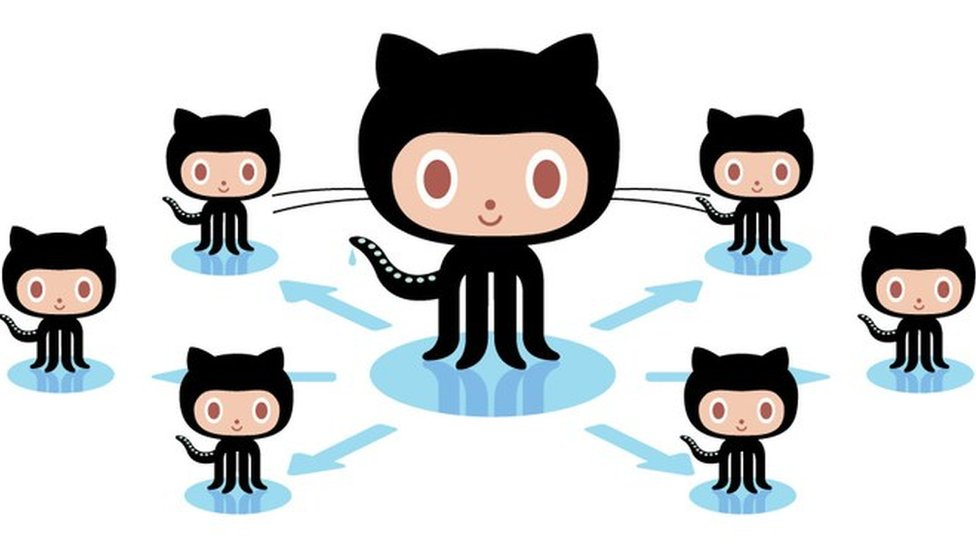

_________________SISTEMAS DE CONTROL GIT Y GITHUB__________
_________________SISTEMAS DE CONTROL GIT Y GITHUB__________
GITHUB - plataforma de desarrollo colaborativo
Que es GitHub
Historia

El 24 de febrero de 2009, el equipo de GitHub anunció en una charla en las oficinas centrales de Yahoo!, que
en su primer año habían logrado acumular 46.000 repositorios públicos, 17.000 de los cuales fueron creados
en solo 1 mes. De los restantes, 6.200 eran forks y 4.600 se habían fusionado.
El 5 de julio de 2009, anunciaron la meta de 100.000 usuarios. Y casi un mes más tarde, en otra charla en
las oficinas de Yahoo! anunciaron que habían crecido hasta los 90.000 repositorios, llegando a los 135.000
si se contaban los forks.
El 25 de julio de 2010, GitHub anunció que había llegado al millón de repositorios. Llegando a los 2
millones el 20 de abril de 2012.
El 2 de junio de 2011, el portal ReadWriteWeb reportó que GitHub había sobrepasado a SourceForge y Google
Code en total de commits.
El 9 de julio de 2012, Peter Levine dijo que los beneficios de GitHub habían crecido un 300% anualmente
desde 2008, siendo provechoso durante casi todo el trayecto.
El 16 de enero de 2013, sobrepasaron los 3 millones de usuarios registrados y alojaban ya más de 5 millones
de repositorios. Llegando a los 10 millones el 23 de diciembre de 2013.
En junio de 2015, GitHub abrió su primera oficina fuera de Estados Unidos, en Japón.
El 29 de julio de 2015, levantaron una ronda de inversión de 250 millones de dólares, liderada por Sequoia
Capital. Esta ronda hizo que la valoración de la compañía ascendiera a los 2 billones de dólares.
En 2016, Forbes Clous 100 listó a GitHub como la número 14.
El 28 de febrero de 2018, GitHub fue víctima del segundo mayor ataque de denegación de servicio (DDoS) de la
historia. Llegando a recibir un tráfico de 1.35 terabits por segundo.
El 4 de junio de 2018, Microsoft anunció la compra de la compañía por un importe de 7500 millones de
dólares. Cerrándose la adquisición el 26 de octubre de 2018.
El 28 de julio de 2020 GitHub hizo publica su hoja de ruta donde da a conocer todos los nuevos avances y los
desarrollos futuros que prepara esta plataforma. El objetivo principal es que el mundo este preparado para
los nuevos cambios que se avecinan.
Características

- Página web para cada proyecto.5
- Gráfico para ver cómo los desarrolladores trabajan en sus repositorios y bifurcaciones del proyecto.
- Funcionalidades como si se tratase de una red social, por ejemplo, seguidores.
- Herramienta para trabajo colaborativo entre programadores.
- Gestor de proyectos de estilo Kanban.
- Actions herramientas de CI
- Codespaces un IDE en la nube para los repositorios.